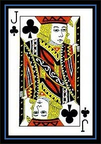
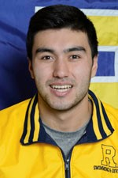

Jack Dalton
Early Life
I am originally from Louisiana, but I moved around the state a lot. At the beginning of sophomore year of high school, I left my home to attend a public, boarding school in rural, northern Louisiana. My high school was very different from others in that its focus was academics and maintaining a positive public image (it was basically UofR). Therefore, while I volunteered a lot and did various other community service events, I was learning a lot about what I wanted to do. It was there, where I learned about careers in the sciences and began to think about what I wanted to do with my life. Three years later, I was faced with the decision to stay or leave Louisiana. In the end, I decided that there weren’t many opportunities for me in Louisiana, and I eventually learned of the UofR. This campus offered me a different perspective on cultural, social, and political issues, which trully interested me. And here I am.
Academic Program
I am a Mechanical Engineering major at the University of Rochester, and I am also minoring in Computer Science. I am very interested in how the world works, and I find both theoretical research and its application interesting. However, I decided to major in Mechanical Engineering because the idea of building something that could impact others interests me, which is why I also decided to minor in computer science. So far at UofR, I have taken the following courses: CSC 170, CSC 171, CSC 172, CSC 214, and CSC 240. Additionally, I have been a CHM 132 Lab Teacher Assistant, and I am currently a CSC 240/440 TA.
Interests
In my free time, I enjoy going on hikes, visiting parks, museums, and other activities. However, most of the time I spend outside of class and doing homework, I find myself learning things that interest me and participate in organizations on campus. Currently, I am learning how to play the guitar and how to build a self-balancing robot using arduino.
Eric Feriouz
Early Life
I am currently a senior at the University of Rochester. I grew up in Acton, Massachusetts, a small town right outside of Boston. I have a sibling who is currently in 7th grade. Before college, I enjoyed playing video games, watching movies and playing sports with my friends. During my senior year of highschool, not having a particular major in mind, I chose to attend the University of Rochester due to how well rounded all of its programs are. On top of this, there was a spot for me on the swim team. I have been a competitive swimmer since I was 8 years old, so swimming was a big part of the decision to attend here. I was also used to heavy winters, so I did not let the Rochester weather deter me from committing here.
Academic Program
In regards to engineering coursework, I have loved the hands on experience I have gotten from my mechanical design class. I also enjoyed fluid dynamics and thermodynamics. For engineering internships, I spent the summer of 2017 in Rochester working for Nalco Water. When deciding on my major I was torn between Engineering and Computer Science. I was intrigued by engineering due to my deep interest in physics in high school. However, I knew computer science was a fascinating major as it required a substantial amount of logic and creativity. It took me 2 semesters to finalize on mechanical engineering, but I made sure to pursue a minor in computer science due to the fun I had in previous coding course I had taken. At the University of Rochester, I have taken: Intro to Programming, Data Structures, Web Design and Development and Statistical Programming. This semester I am taking Advanced Web Design and Robot Construction.
Interests
For my senior spring semester, I hope to explore Rochester as much as I can before I graduate. After graduation, I will be working as an analyst for Deloitte in the Washington D.C area. I will hope to traveland visit places that I have never visited before and spend time with my family before I move to D.C. I look forward to see what the next few years have in store for me!